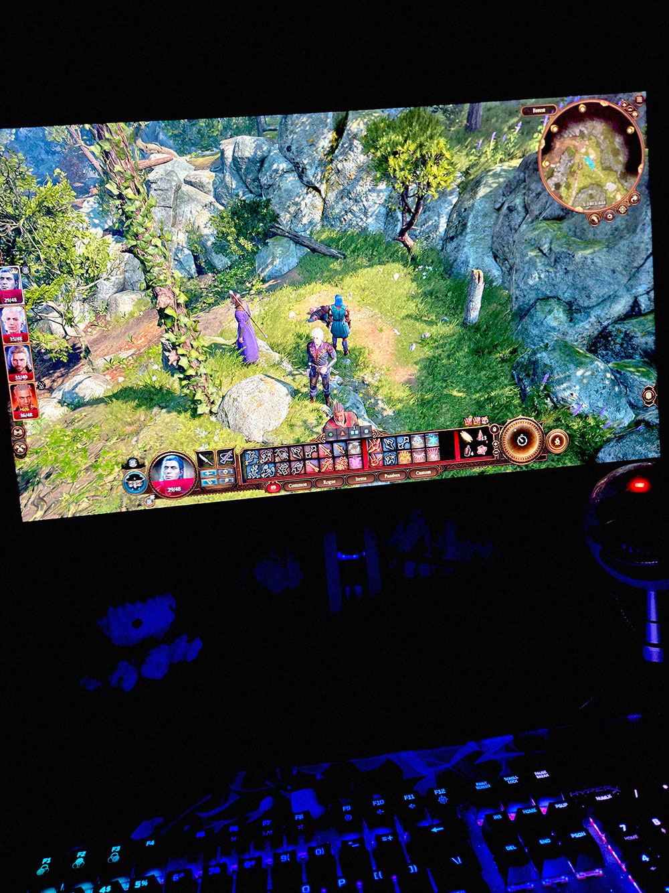

So… turns out since the kiss, I’ve been really weird towards Finn since the kiss. Finn asked me about it and I’m starting to panic. I think he’s catching on to my feelings, or maybe Vega said something to him. She’s the only one who knows that I like him. I haven’t told anyone else!
So, I’ve been sort of pulling away from him… I know, I know! I said I wouldn’t do it, but I can’t face him. Every time I look at him, I get butterflies in my stomach, and then I get the bad anxiety about the idea of him finding out that I love him.
Oh shit… I love him, don’t I? Oh, this makes everything so much worse! I can’t stop thinking about the damn kiss and he’s been distracting me from my classes. I can’t focus and I’m taking the shittiest notes. I might actually fail this semester if I don’t turn this around…
But my anxiety is getting so bad. I haven’t had anxiety like this in a long time, especially not paired with the depression. I don’t know what to do with myself.
So I’m just going to keep myself away from him. That’s the way life is, right? Sometimes people drift apart. And maybe I can move on so he can find himself some nice person who will make him happier than anyone else ever has. That’s what he deserves. Happiness.
Cedar